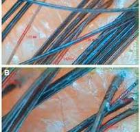

Healing begins with understanding. Where patients are heard before they are prescribed.
📞 Call Now 💬 WhatsApp
Dr. Jasleen Kaur
B.H.M.S. (Nehru Homoeopathic Medical College and Hospital, University of Delhi)
Ex-Consultant, Dr. Batra's
Founder & Classical Homeopathic Physician
At Dr. Cureleen Homeopathy Clinic, we believe healing is not just about relieving symptoms—it is about restoring overall health and improving quality of life. Every consultation is centred on understanding you as a whole person, including your physical symptoms, emotional well-being, lifestyle and medical history.
Our approach is based on the principles of classical homeopathy, where treatment is individualized rather than disease-centred. We focus on identifying possible contributing factors, explaining medical reports in simple language, and helping patients make informed decisions about their health.
We are committed to providing honest, ethical and evidence-informed guidance. We do not make unrealistic promises. Instead, we believe in gentle, individualized and long-term healing, while respecting every branch of medicine and recommending specialist care whenever it is in the patient's best interest.
📍 Shop No. 7, AD Market, Poorbi Shalimar Bagh, Delhi – 110088
Your trust and feedback inspire us to continue providing compassionate care.
★★★★★ Read Google ReviewsYour feedback helps us improve and guides new patients in making informed decisions.
At Dr. Cureleen Homeopathy Clinic, we believe healthcare should be honest, individualized and patient-centred. Every consultation is designed to help you understand your health—not just receive a prescription.
"Every patient deserves to be heard, understood and treated with compassion."
Fever, cough, cold, sore throat, viral infections and seasonal illnesses.
Allergic rhinitis, recurrent cough, sinusitis and seasonal allergies.
Individualized care for recurrent headaches and migraine.
PCOS, menstrual irregularities, hormonal imbalance and related concerns.
Supportive care with lifestyle guidance for diabetes, high blood pressure and abnormal cholesterol levels.
Hypothyroidism, hyperthyroidism and thyroid-related health concerns.
Hair fall, dandruff, acne, eczema, psoriasis, vitiligo and chronic skin conditions.
Fatty liver, acidity, indigestion, gastritis and digestive complaints.
Kidney stones, urinary tract infections (UTI) and urinary complaints.
Osteoarthritis, Rheumatoid Arthritis and selected autoimmune conditions.
Stress, anxiety, depression and selected psychological concerns.
Supportive individualized care for attention and behavioural concerns.
Recurrent infections, low immunity and common pediatric illnesses.
Supportive care for sprains, strains, bruises and minor injuries.

📧 dr.cureleen@gmail.com
📍 Shop No. 7, AD Market, Poorbi Shalimar Bagh, Delhi - 110088
🕛 Sunday – Friday
12:00 PM – 3:00 PM
5:00 PM – 8:00 PM
Saturday Closed


